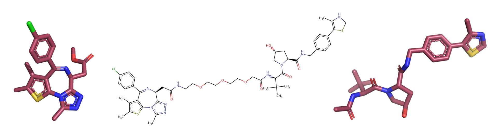

Tutorial#
In this tutorial, we will obtain two binary complexes from the PDB, and model a Protac ternary complex (TC) with them. All input files and summary files can be found in the tutorial folder in the GitHub repo. We will replicate the first ever TC determined experimentally, which comprises the protein of interest (POI) BRD4bd2 bound to the Von Hippel Lindau (VHL) E3 ligase substrate receptor and bridged by the protac MZ1. First, we will run P4ward as if this structure has never been solved at all and make a model of it. Next, we will run P4ward in benchmarking mode, so that we can compare the results with the known crystal structure.
Obtaining the input files#
First we need to obtain the files that P4ward needs to run.
Obtain the binary complex of BRD4bd2 bound to MS417 inhibitor from the PDB, code 6DUV. We will name this file
receptor_raw.pdbObtain the binary of VHL bound to ligand code 3JF, code 4W9H. This file will be
ligase_raw.pdb- For each of these binary complexes, we also need to obtain a
mol2file of their respective ligands. Therefore, we can scroll down on their PDB pages and download the instance coordinates for the ligands, choosing mol2 format.
- For each of these binary complexes, we also need to obtain a
Now, we need to clean up the protein files. Using the software of your choice, remove all except the protein’s main chain of interest. For example, with ChimeraX we can:
Delete all nonstandard atoms and redundant chains (while keeping chain A) then save the new structure as
receptor.pdb:
(open receptor_raw.pdb)
del ~protein; del ~/A
(save receptor.pdb)
Do the same for the ligase structure (keeping chain C):
(open ligase_raw.pdb)
del ~protein; del ~/C
(save ligase.pdb)
Now, if we open receptor.pdb with receptor_ligand.mol2, we should see the binary complex:
{kind=link}
And we should see the same for ligase.pdb and ligase_ligand.mol2:
{kind=link}
Now we can obtain the Protac. P4ward will take a smiles file with one or more smiles code per line. Each line is the code for an entire protac. For now, we can obtain the smiles code for protac MZ1 by copying it from its PDB page and we can paste it in a file called protacs.smiles. Note that the smiles code can be followed by a single space and the molecule name. If you add a molecule name, P4ward will use this name for the outputs. Otherwise, it will automatically generate molecule names by numbering them. This way, the contents of protacs.smiles will be:
Cc1c(sc-2c1C(=N[C@H](c3n2c(nn3)C)CC(=O)NCCOCCOCCOCC(=O)N[C@H](C(=O)N4C[C@@H](C[C@H]4C(=O)NCc5ccc(cc5)C6=C(NCS6)C)O)C(C)(C)C)c7ccc(cc7)Cl)C mz1
An important step at this point is to examine the ligand files and the protac 2D structure determined in the smiles code and make sure they match, since P4ward will need to match them later. Bonds in aromatic rings, for example, can be represented in different ways, which could lead to incompatibilities. Visualize your smiles code in a program such as the web version of Marvin sketch, and the ligand files in a program that shows the bond orders, such as Pymol:
{kind=link}
It is also good to look at the mol2 files in a text editor to check for inconsistencies. In the case of this tutorial, the very first atom in receptor_ligand.mol2 has inconsistent naming which will probably trigger an RDKit error. All atom names should have only the first character capitalized. So we need to change:
[...]
@<TRIPOS>MOLECULE
0S6
28 31 1
****
****
@<TRIPOS>ATOM
1 CL1 -45.604 12.621 21.900 CL 1 0S6 0.000
1 CL1 -45.604 12.621 21.900 Cl 1 0S6 0.000
2 C15 -44.378 13.693 21.178 C.ar 1 0S6 0.000
3 C16 -43.534 14.400 22.020 C.ar 1 0S6 0.000
All is the same for the ligase ligand, but there are some bond order differences on the receptor ligand. It is important to make sure the smiles contains the correct bond orders. However, it is okay if the ligands in the mol2 files don’t, as long as this does not prevent proper matching. This is because only the coordinates of the atoms in the mol2 files will be used for modelling of the protacs later on.
Now we can create a configuration file with the names of the files we just prepared. Open a new file which we will call config.ini with the following contents:
[general]
receptor = receptor.pdb
ligase = ligase.pdb
receptor_ligand = receptor_ligand.mol2
ligase_ligand = ligase_ligand.mol2
protacs = protacs.smiles
Checking the protac-ligand matches#
P4ward also offers a simple way to check if the ligands and the protac match. Through its command check_lig_matches, we can see if RDKit will throw any errors about processing the molecules’ structures, or if it will be able to properly recognize the ligands in the protac structure.
Let’s run the ligand check:
Note
When running P4ward through conda, don’t forget to activate the conda environment.
If running through apptainer, don’t forget to change the path to the .sif file when copying the example commands. When using docker, note that -v .:/home/data should not be changed.
sudo docker run -v .:/home/data p4ward --config_file config.ini --check_lig_matches
python -m p4ward --config_file config.ini --check_lig_matches
apptainer run -B /home /path/to/p4ward.sif --config_file config.ini --check_lig_matches
P4ward will then run and write a log at p4ward.log:
19:13:30 > INFO - Retrieving previous run steps.
19:13:30 > INFO - No previous data retrieved.
19:13:30 > ERROR - Ligand matching failed.Please check your structures and consider turning off RDKit ligand sanitization.
RDKit error:
Python argument types in
rdkit.Chem.rdmolops.CombineMols(Mol, NoneType)
did not match C++ signature:
CombineMols(RDKit::ROMol mol1, RDKit::ROMol mol2, RDGeom::Point3D offset=<rdkit.Geometry.rdGeometry.Point3D object at 0x7feff2c8adc0>)
We see P4ward warned us that there is an error with the ligands (highlighted line). By default, ligand sanitization is set to True on in P4ward’s settings, so we will add it to our config.ini file with a value of False to turn it off:
[general]
receptor = receptor.pdb
ligase = ligase.pdb
receptor_ligand = receptor_ligand.mol2
ligase_ligand = ligase_ligand.mol2
protacs = protacs.smiles
rdkit_ligands_cleanup = False
Then we can run the check again and look at the output:
$ python -m p4ward --config_file config.ini --check_lig_matches
19:26:27 > INFO - Retrieving previous run steps.
19:26:27 > INFO - No previous data retrieved.
19:26:27 > INFO - Testing ligand match between the protac smiles codes and the ligand structures at receptor_ligand_test.mol2 and ligase_ligand.mol2
19:26:28 > INFO - Wrote image for mz1 matches at ligand_matches-mz1.png
Number of linker atoms found: 10, at indices: [18, 19, 20, 21, 22, 23, 24, 25, 26, 27]
And all looks good. The image P4ward generated shows that all ligand atoms in both the mol2 files provided were identified on the protac 2d structure, see that all the atoms that are also present in the ligands are highlighted. Also, note that the atom indices P4ward reports to belong to the linker in the output are correct when checking against the image. If, at this point, the ligand matching does not look right, it is good to edit the bond orders in the mol2 files to make sure they match perfectly and try the matching test again.
{kind=link}
The image result of P4ward’s ligand check. The atoms highlighted in red have been matched between the ligands mol2 files and the 2D protac smiles file provided.#
Note
There is no need to add hydrogens to the protac. They will be added automatically during sampling.
Running P4ward TC modelling#
Now we can finish building the input file with our preferred settings. If you submit P4ward with config.ini as is, all other settings will be automatically populated with the default values, which can be found at Run input configuration. For more information about how these default values were chosen, please refer to [our publication](LINK).
For the purposes of this tutorial, we will modify slightly the options so that our run does not take too long to complete. We will generate a template configuration file, default.ini, by running:
sudo docker run -v .:/home/data p4ward --write_default
python -m p4ward --write_default
apptainer run -B /home /path/to/p4ward.sif --write_default
Next, we will make the following modifications to the default file:
If you’re running using Docker or a conda environment, there is no need to worry about changing anything in the
[program_paths]section;Adjust the file names to reflect our input files;
Make sure we keep
rdkit_ligands_cleanupasFalse;Depending on your system, change
number_of_processorsto a value that suits it best;- Change the megadock settings to generate fewer protein poses, this will reduce the runtime for this tutorial;
Change
num_rotational_anglesto3600;Change
num_predictions_per_rotationto5;We want all the poses to be reported in the megadock output file, so we can change
num_predictionsto18000;We also want P4ward to consider all poses, so change
top_posesto the same value of18000;
Save this configuration as
config_run.ini.
Thus, our configuration will have the following changes:
1[program_paths]
2megadock = megadock
3obabel = obabel
4rxdock_root = ""
5
6[general]
7overwrite = False
8receptor = receptor.pdb
9ligase = ligase.pdb
10protacs = protac.smiles
11protacs = protacs.smiles
12receptor_ligand = receptor_ligand.mol2
13ligase_ligand = ligase_ligand.mol2
14rdkit_ligands_cleanup = True
15rdkit_ligands_cleanup = False
16num_processors = 8
17
18[protein_prep]
19pdbfixer = True
20pdbfixer_ignore_extremities = True
21pdbfixer_ph = 7.0
22minimize = True
23minimize_maxiter = 0
24minimize_h_only = True
25
26[megadock]
27run_docking = True
28num_predictions = 162000
29num_predictions = 18000
30num_predictions_per_rotation = 3
31num_predictions_per_rotation = 5
32num_rotational_angles = 54000
33num_rotational_angles = 3600
34run_docking_output_file = megadock.out
35run_docking_log_file = megadock_run.log
36
37[protein_filter]
38ligand_distances = True
39filter_dist_cutoff = auto
40filter_dist_sampling_type = 3D
41crl_model_clash = True
42clash_threshold = 1.0
43clash_count_tol = 10
44accessible_lysines = True
45lysine_count = 1
46lys_sasa_cutoff = 2.5
47overlap_dist_cutoff = 5.0
48vhl_ubq_dist_cutoff = 60.0
49crbn_ubq_dist_cutoff = 16.0
50e3 = vhl
51
52[protein_ranking]
53cluster_poses_redundancy = False
54cluster_poses_trend = True
55clustering_cutoff_redund = 3.0
56clustering_cutoff_trend = 10.0
57cluster_redund_repr = centroid
58top_poses = 10
59top_poses = 18000
60generate_poses = filtered
61generate_poses_altlocA = True
62generated_poses_folder = protein_docking
63rescore_poses = True
64
65[protac_sampling]
66unbound_protac_num_confs = 10
67
68[linker_sampling]
69rdkit_sampling = True
70protac_poses_folder = protac_sampling
71extend_flexible_small_linker = True
72extend_neighbour_number = 2
73min_linker_length = 2
74rdkit_number_of_confs = 10
75write_protac_conf = True
76rdkit_pose_rmsd_tolerance = 1.0
77rdkit_time_tolerance = 300
78rdkit_random_seed = 103
79extend_top_poses_sampled = True
80extend_top_poses_score = True
81extend_top_poses_energy = False
82
83[linker_ranking]
84linker_scoring_folder = protac_scoring
85rxdock_score = True
86rxdock_target_score = SCORE.INTER
87rxdock_minimize = False
88
89[outputs]
90plots = True
91chimerax_view = True
92write_crl_complex = True
93crl_cluster_rep_only = True
Then we can run TC modelling using the command:
sudo docker run -v .:/home/data p4ward --config_file config_run.ini
python -m p4ward --config_file config_run.ini
apptainer run -B /home /path/to/p4ward.sif --config_file config_run.ini
Tip
If at any point you need to restart your run, either because you encountered errors or need to change a setting, make sure to change the setting overwrite to True, or delete the files with the .pickle extension.
Viewing the results#
A P4ward run will generate result files in the following folders:
protein_dockingContains pdb files of the ligase docking poses generated by megadock. By default, only the poses which passed the protein filters (distance filter and CRL filter) will be written.
protac_samplingContains sdf files comprising protac conformations sampled by rdkit for each protein pose.
protac_scoringContains sdf files comprising protac conformations previously generated by RDKit and now scored by RxDock. If RxDock minimization was performed (which is not the case in this tutorial), then the conformation of the protacs in this folder will be different than in the
protac_samplingfolder.crl_modelsIf configured to do so, P4ward will write the complete CRL models of the final TC predictions.
results_summariesAutomatically generated outputs with the results. We will go into this folder to see the modelling results.
The first thing to do is look at summary-mz1.csv. You can open it in your preferred way (like a spreadsheet) but I will view it using python and pandas. If we just open the table, this is what we see (note that it scrolls vertically and horizontally):
| pose_number | megadock_score | crl | cluster_number | cluster_centr | cluster_best | cluster_size | protac_pose | active_linkers | top_protac_score | final_score | |
|---|---|---|---|---|---|---|---|---|---|---|---|
| 0 | 15092 | 1699.34 | [2] | 16 | True | True | 1.0 | True | 3 | -35.73040 | -0.510400 |
| 1 | 11831 | 1802.28 | [1] | 14 | True | True | 1.0 | True | 8,9,2,1 | -37.73660 | -0.509957 |
| 2 | 14422 | 1722.82 | [2] | 2 | False | True | 6.0 | True | 2 | -34.06310 | -0.509786 |
| 3 | 15321 | 1690.30 | [2] | 15 | True | True | 1.0 | True | 8,6,1 | -34.61550 | -0.509641 |
| 4 | 9971 | 1854.86 | [2] | 17 | False | True | 2.0 | True | 2,3,9,8 | -37.39660 | -0.509021 |
| 5 | 13549 | 1749.68 | [1] | 5 | True | True | 2.0 | True | 5,3,0,4,8,1,9,6 | -37.09920 | -0.508916 |
| 6 | 5047 | 2021.71 | [1] | 8 | False | True | 4.0 | True | 2,3,4 | -36.81800 | -0.508751 |
| 7 | 8181 | 1907.59 | [2] | 0 | True | True | 7.0 | True | 8,9,1,0 | -36.01740 | -0.508517 |
| 8 | 5028 | 2022.13 | [1] | 8 | False | False | NaN | True | 3,6 | -34.57790 | -0.508475 |
| 9 | 5355 | 2009.79 | [3] | 18 | True | True | 1.0 | True | 7,5,8,2,0,3,9,4,6 | -39.32680 | -0.506855 |
| 10 | 14543 | 1718.41 | [1] | 2 | True | False | 6.0 | True | 3,1,5,4,9 | -32.96480 | -0.506844 |
| 11 | 10109 | 1851.04 | [2] | 0 | False | False | NaN | True | 2,5,6 | -30.81380 | -0.506769 |
| 12 | 10949 | 1826.69 | [2] | 13 | True | True | 1.0 | True | 8,4,9 | -34.51120 | -0.506620 |
| 13 | 5916 | 1987.98 | [2] | 3 | False | True | 4.0 | True | 9,5,2,6 | -40.35560 | -0.506268 |
| 14 | 13080 | 1763.08 | [1] | 10 | True | True | 1.0 | True | 7 | -21.26170 | -0.505993 |
| 15 | 15570 | 1679.60 | [2] | 1 | True | True | 2.0 | True | 0,8,6 | -34.05350 | -0.505378 |
| 16 | 1919 | 2223.11 | [4] | 0 | False | False | NaN | True | 3,7,9,5,0 | -39.61620 | -0.505227 |
| 17 | 955 | 2351.91 | [1] | 8 | False | False | NaN | True | 3,6 | -39.26950 | -0.504948 |
| 18 | 1933 | 2221.36 | [2] | 20 | True | True | 1.0 | True | 9,7 | -39.22140 | -0.504773 |
| 19 | 15080 | 1699.91 | [1] | 2 | False | False | NaN | True | 6,3,2 | -36.36990 | -0.504639 |
| 20 | 2483 | 2170.09 | [1] | 8 | True | False | 4.0 | True | 3,6 | -20.34860 | -0.503868 |
| 21 | 12327 | 1787.53 | [2] | 3 | False | False | NaN | True | 8 | -12.98290 | -0.503618 |
| 22 | 12625 | 1777.97 | [1] | 19 | True | True | 1.0 | True | 4,8,9 | -21.81520 | -0.503593 |
| 23 | 12632 | 1777.53 | [1] | 2 | False | False | NaN | True | 5,2,7,3 | -19.46110 | -0.503536 |
| 24 | 10686 | 1833.94 | [2] | 3 | True | False | 4.0 | True | 7,3 | -22.21530 | -0.503425 |
| 25 | 7081 | 1944.16 | [2] | 3 | False | False | NaN | True | 2,7 | -21.03310 | -0.503044 |
| 26 | 14696 | 1712.56 | [1] | 5 | False | False | NaN | True | 2 | -10.12990 | -0.502949 |
| 27 | 5730 | 1994.99 | [5] | 0 | False | False | NaN | True | 4,7 | -19.81230 | -0.502814 |
| 28 | 1117 | 2322.41 | [2] | 0 | False | False | NaN | True | 3,0,4,9,1,7 | -35.90990 | -0.502763 |
| 29 | 4581 | 2042.30 | [2] | 9 | True | True | 1.0 | True | 1 | -10.97070 | -0.502679 |
| 30 | 15072 | 1700.16 | [1] | 4 | True | True | 1.0 | True | 9,4 | -9.02296 | -0.502528 |
| 31 | 12624 | 1778.06 | [3] | 0 | False | False | NaN | True | 9 | -7.60426 | -0.502134 |
| 32 | 6536 | 1963.25 | [2] | 2 | False | False | NaN | True | 7 | -7.63405 | -0.501940 |
| 33 | 13338 | 1756.03 | [2] | 0 | False | False | NaN | True | 0 | -5.62066 | -0.501598 |
| 34 | 8884 | 1886.30 | [1] | 7 | True | True | 1.0 | True | 9 | -5.73324 | -0.501517 |
| 35 | 16665 | 1631.66 | [2] | 11 | True | True | 1.0 | True | 7 | -4.58055 | -0.501402 |
| 36 | 2569 | 2163.34 | [4] | 1 | False | False | NaN | True | 2,8 | -7.45048 | -0.501365 |
| 37 | 14916 | 1705.75 | [1] | 12 | True | True | 1.0 | True | 8 | -3.34762 | -0.500980 |
| 38 | 9143 | 1878.31 | [2] | 17 | True | False | 2.0 | True | 0 | -2.63723 | -0.500702 |
| 39 | 15510 | 1682.22 | [1] | 2 | False | False | NaN | True | 2 | -1.94529 | -0.500578 |
| 40 | 902 | 2363.43 | [1] | 6 | True | True | 1.0 | True | 2 | -1.51342 | -0.500320 |
Each row represents a TC model and the columns report the following properties:
pose_numberThe number of the protein pose in the TC model.
megadock_scoreThe megadock score for the protein-protein interaction
crlThe number of accessible lysines
cluster_numberThe cluster that protein pose belongs to
cluster_centrIf that protein pose is the closest to the cluster centroid
cluster_bestIf that protein pose is the best scoring one in the centroid (based on final score, if it was used)
cluster_sizeHow many members the cluster that pose belongs to has. The cluster size will only be reported for the poses which are either cluster best or cluster centroid.
protac_poseIf at least one protac conformation was successfully sampled for that protein pose
active_linkersWhich protac conformations passed all the protac filters (such as steric clash detection)
top_protac_scoreThe best scoring protac conformation (based on RxDock score)
final_scoreThe final score for the TC model. This score combines both protein-protein docking score generated by Megadock, and the protein-protac score generated by RxDock. This score is used to sort the table, and the lower the better.
We want to see the results filtered by the cluster analysis, which is performed using all the protein poses listed in this table. Therefore, to get our final P4ward best predicted TC models, we must filter this table by the column cluster_centr. With python, we can just:
import pandas as pd
data = pd.read_csv('summary-mz1.csv', index_col=0)
data_centr = data[data['cluster_centr']]
print(data_centr)
| pose_number | megadock_score | crl | cluster_number | cluster_centr | cluster_best | cluster_size | protac_pose | active_linkers | top_protac_score | final_score | |
|---|---|---|---|---|---|---|---|---|---|---|---|
| 0 | 15092 | 1699.34 | [2] | 16 | True | True | 1.0 | True | 3 | -35.73040 | -0.510400 |
| 1 | 11831 | 1802.28 | [1] | 14 | True | True | 1.0 | True | 8,9,2,1 | -37.73660 | -0.509957 |
| 3 | 15321 | 1690.30 | [2] | 15 | True | True | 1.0 | True | 8,6,1 | -34.61550 | -0.509641 |
| 5 | 13549 | 1749.68 | [1] | 5 | True | True | 2.0 | True | 5,3,0,4,8,1,9,6 | -37.09920 | -0.508916 |
| 7 | 8181 | 1907.59 | [2] | 0 | True | True | 7.0 | True | 8,9,1,0 | -36.01740 | -0.508517 |
| 9 | 5355 | 2009.79 | [3] | 18 | True | True | 1.0 | True | 7,5,8,2,0,3,9,4,6 | -39.32680 | -0.506855 |
| 10 | 14543 | 1718.41 | [1] | 2 | True | False | 6.0 | True | 3,1,5,4,9 | -32.96480 | -0.506844 |
| 12 | 10949 | 1826.69 | [2] | 13 | True | True | 1.0 | True | 8,4,9 | -34.51120 | -0.506620 |
| 14 | 13080 | 1763.08 | [1] | 10 | True | True | 1.0 | True | 7 | -21.26170 | -0.505993 |
| 15 | 15570 | 1679.60 | [2] | 1 | True | True | 2.0 | True | 0,8,6 | -34.05350 | -0.505378 |
| 18 | 1933 | 2221.36 | [2] | 20 | True | True | 1.0 | True | 9,7 | -39.22140 | -0.504773 |
| 20 | 2483 | 2170.09 | [1] | 8 | True | False | 4.0 | True | 3,6 | -20.34860 | -0.503868 |
| 22 | 12625 | 1777.97 | [1] | 19 | True | True | 1.0 | True | 4,8,9 | -21.81520 | -0.503593 |
| 24 | 10686 | 1833.94 | [2] | 3 | True | False | 4.0 | True | 7,3 | -22.21530 | -0.503425 |
| 29 | 4581 | 2042.30 | [2] | 9 | True | True | 1.0 | True | 1 | -10.97070 | -0.502679 |
| 30 | 15072 | 1700.16 | [1] | 4 | True | True | 1.0 | True | 9,4 | -9.02296 | -0.502528 |
| 34 | 8884 | 1886.30 | [1] | 7 | True | True | 1.0 | True | 9 | -5.73324 | -0.501517 |
| 35 | 16665 | 1631.66 | [2] | 11 | True | True | 1.0 | True | 7 | -4.58055 | -0.501402 |
| 37 | 14916 | 1705.75 | [1] | 12 | True | True | 1.0 | True | 8 | -3.34762 | -0.500980 |
| 38 | 9143 | 1878.31 | [2] | 17 | True | False | 2.0 | True | 0 | -2.63723 | -0.500702 |
| 40 | 902 | 2363.43 | [1] | 6 | True | True | 1.0 | True | 2 | -1.51342 | -0.500320 |
Thus there are 21 final TC models. Viewing a single TC model is simple. We need to open the receptor file as well as the files corresponding to the model’s protein pose number.
the docked ligase file will be at protein_docking, and the scored protac conformations file at protac_scoring. For example, to look at the TC model number 0 (the first and best-scored model), open these files:
./receptor.pdb
./protein_docking/pose15092.pdb
./protac_scoring/protac_mz1/protein_pose_15092/protac_scored_confs.sd
Tip
Most visualization programs can open these file types, but some (such as ChimeraX) will not recognise the suffix .sd, even though it is a regular sdf file. You can rename the suffix to .sdf. However, I recommend Pymol to open these individual files. It will recognise the .sd suffix and separate the ligand conformations into different “frames” which you can satisfyingly cycle through using the arrow keys.
As can be seen in the image below and by loading protac_scored_confs.sd file, three linker conformations were generated, but we can see in the table that only one of them is active, conformation 3. If we look at the interaction scores reported by RxDock in the same file, we see that conf_3 is the only one with a negative value. Indeed, based on the image below, it seems like two of them could be sterically clashing with the protein loops above.
{kind=link}
In addition, P4ward generates a ChimeraX script which opens all of the final models at once. If clustering was performed, such as in this tutorial, then the only the cluster centroids will be represented. The script will combine the protein poses with their respective protac poses, as well as color the proteins based on the TC model’s final score.
Note
If your modelling run generated many hundreds of protein poses, opening them all at once with the ChimeraX script may crash your computer.
You can open the ChimeraX visualization using:
open ./results_summaries/summary-mz1.cxc
Finally, we can look at the interactive plots P4ward generates using Plotly. You can open results_summaries/plots-mz1.html using any browser, and you will see the following:
Tip
You can hover over datapoints, zoom in and out of graphs, and you can also toggle the display of the plot elements by clicking their legends.
- Top left plot
We can see how many protein-protein poses were selected at each filtering step: it starts with the 18k poses we asked for, then 2466 passed the distance filter. 2432 of them do not clash with the CRL model, and 1181 exhibit at least one accessible lysine. Out of these, 41 can sample protac poses and therefore successfully generate ternary complex models. After clustering these models, and selecting the centroid poses, we reach our selected final 21 complexes.
- Top right plot
Shows the distribution of the protein-protein scores throughout the main stages of the pipeline: the scores for all the protein poses generated, the scores remaining after the protein filters (distance and CRL), the scores of the poses which successfully sampled protacs, and the distribution of the scores for the cluster centroids.
- Bottom left plot
Plots principal components 1 and 2 from a PCA analysis of the protein poses’ 3D coordinates. This provides a simplified 2D overview of the distribution of the ligases around the receptor protein. The receptor is represented as a green mark, and the protein poses are colored based on whether they passed the protein filters (gray), successfully sampled protacs (purple), or are cluster centroids (yellow).
- Bottom right plot
Provides a scatterplot for all the sampled TC models (protein poses which successfully sampled protacs). The x-axis represents their Megadock score, and the y-axis the protein-protac interaction score by RxDock. Their colors correspond to the P4ward final score, which is a combination of both.
Benchmarking the TC modelling run#
So far, we have ran P4ward as if we had no information on what the ternary complex for these components would look like, and as if there was no experimentally determined ternary complex structure available. Now, we will rerun the modelling just as we have done before, but adding a benchmarking component. We will provide the known position of the ligase bound to the receptor protein, and will let P4ward compare its results with the known binding position.
In order to get the know ligase position, we need to:
access the ternary complex PDBID 5T35;
delete all redundant chains and keep only one chain of the receptor protein (BRD4bd2) as well as the chain of VHL bound to it (we can safely remove the Elongins C and B);
align the structure to our previously generated
receptor.pdb;delete everything except VHL from 5T35;
save the transformed VHL as
ref_ligase.pdb
Here is a ChimeraX script that does this:
open 5t35
del ~protein; del ~/A,D
open receptor.pdb
mmaker #1 to #2
del #2; del #1/A
(save ref_ligase.pdb)
Next we will modify the P4ward command and tell it to benchmark itself, using as reference the file we just created. We do not need to change anything in config_run.ini. Note that in the settings we have overwrite = False. This means that, if you have previously run P4ward in the current working directory, it will access the previous run information (stored in the .pickle files) and not redo what has been done before. And so when we rerun P4ward again with the benchmarking command, it will access the previous run and benchmark it, without having to rerun the same modelling calculations.
Note
If we were to change the configuration settings for any reason, we would also need to rerun the calculations, and therefore toggle overwrite = True.
To benchmark, run:
sudo docker run -v .:/home/data p4ward --config_file config_run.ini --benchmark --ref_ligase ref_ligase.pdb
python -m p4ward --config_file config_run.ini --benchmark --ref_ligase ref_ligase.pdb
apptainer run -B /home /path/to/p4ward.sif --config_file config_run.ini --benchmark --ref_ligase ref_ligase.pdb
This will trigger running the p4ward.benchmark.capri module, which performs the Capri assessment when comparing the ref_ligase with each TC protein pose.
Viewing the benchmarking results#
As we did before, let’s look at the final table, filtered to show only the cluster centroids:
| pose_number | megadock_score | crl | l_rms | i_rms | fnat | capri_rank | cluster_number | cluster_centr | cluster_best | cluster_size | protac_pose | active_linkers | top_protac_score | final_score | |
|---|---|---|---|---|---|---|---|---|---|---|---|---|---|---|---|
| 0 | 15092 | 1699.34 | [2] | 44.425 | 14.060 | 0.000 | incorrect | 16 | True | True | 1.0 | True | 3 | -35.73040 | -0.510400 |
| 1 | 11831 | 1802.28 | [1] | 19.387 | 4.900 | 0.318 | acceptable | 14 | True | True | 1.0 | True | 8,9,2,1 | -37.73660 | -0.509957 |
| 3 | 15321 | 1690.30 | [2] | 45.988 | 12.708 | 0.000 | incorrect | 15 | True | True | 1.0 | True | 8,6,1 | -34.61550 | -0.509641 |
| 5 | 13549 | 1749.68 | [1] | 20.590 | 10.626 | 0.000 | incorrect | 5 | True | True | 2.0 | True | 5,3,0,4,8,1,9,6 | -37.09920 | -0.508916 |
| 7 | 8181 | 1907.59 | [2] | 5.087 | 1.347 | 0.727 | medium | 0 | True | True | 7.0 | True | 8,9,1,0 | -36.01740 | -0.508517 |
| 9 | 5355 | 2009.79 | [3] | 37.226 | 9.478 | 0.045 | incorrect | 18 | True | True | 1.0 | True | 7,5,8,2,0,3,9,4,6 | -39.32680 | -0.506855 |
| 10 | 14543 | 1718.41 | [1] | 37.405 | 8.163 | 0.045 | incorrect | 2 | True | False | 6.0 | True | 3,1,5,4,9 | -32.96480 | -0.506844 |
| 12 | 10949 | 1826.69 | [2] | 40.803 | 9.324 | 0.000 | incorrect | 13 | True | True | 1.0 | True | 8,4,9 | -34.51120 | -0.506620 |
| 14 | 13080 | 1763.08 | [1] | 48.159 | 13.643 | 0.000 | incorrect | 10 | True | True | 1.0 | True | 7 | -21.26170 | -0.505993 |
| 15 | 15570 | 1679.60 | [2] | 15.844 | 2.844 | 0.364 | acceptable | 1 | True | True | 2.0 | True | 0,8,6 | -34.05350 | -0.505378 |
| 18 | 1933 | 2221.36 | [2] | 23.297 | 6.348 | 0.045 | incorrect | 20 | True | True | 1.0 | True | 9,7 | -39.22140 | -0.504773 |
| 20 | 2483 | 2170.09 | [1] | 44.530 | 12.872 | 0.000 | incorrect | 8 | True | False | 4.0 | True | 3,6 | -20.34860 | -0.503868 |
| 22 | 12625 | 1777.97 | [1] | 22.088 | 11.043 | 0.000 | incorrect | 19 | True | True | 1.0 | True | 4,8,9 | -21.81520 | -0.503593 |
| 24 | 10686 | 1833.94 | [2] | 16.188 | 5.183 | 0.318 | acceptable | 3 | True | False | 4.0 | True | 7,3 | -22.21530 | -0.503425 |
| 29 | 4581 | 2042.30 | [2] | 14.540 | 4.694 | 0.182 | incorrect | 9 | True | True | 1.0 | True | 1 | -10.97070 | -0.502679 |
| 30 | 15072 | 1700.16 | [1] | 13.144 | 4.996 | 0.318 | acceptable | 4 | True | True | 1.0 | True | 9,4 | -9.02296 | -0.502528 |
| 34 | 8884 | 1886.30 | [1] | 24.267 | 6.546 | 0.045 | incorrect | 7 | True | True | 1.0 | True | 9 | -5.73324 | -0.501517 |
| 35 | 16665 | 1631.66 | [2] | 42.112 | 13.782 | 0.000 | incorrect | 11 | True | True | 1.0 | True | 7 | -4.58055 | -0.501402 |
| 37 | 14916 | 1705.75 | [1] | 16.501 | 5.227 | 0.318 | acceptable | 12 | True | True | 1.0 | True | 8 | -3.34762 | -0.500980 |
| 38 | 9143 | 1878.31 | [2] | 25.254 | 4.770 | 0.091 | incorrect | 17 | True | False | 2.0 | True | 0 | -2.63723 | -0.500702 |
| 40 | 902 | 2363.43 | [1] | 42.778 | 13.278 | 0.000 | incorrect | 6 | True | True | 1.0 | True | 2 | -1.51342 | -0.500320 |
There are four new rows in the results table now.
l_rmsThe RMSD (Å) between the reference pose and the model pose. The RMSD is calculated using the smaller of the proteins.
i_rmsThe RMSD (Å) of the interface atoms between the reference and the model pose.
fnatThe fraction of native contacts. This is calculated by dividing the number of correct residue-residue pairs in the model divided by the number of residue-residue pairs in the target complex.
capri_rankUsing the parameters above, P4ward calculates the Capri rank, which reflects the level of accuracy of the prediction, and can be of “high”, “medium”, “acceptable”, or “incorrect” category.
There are 5 acceptable poses among the 21 final models, and one medium pose. If we were performing a modelling study for this system and looked at the top 10 predicted models, we would have encountered two acceptable poses and one medium pose. The Capri thresholds are strict, and we can see the medium pose has quite low RMSD values: 5.1Å between the protein poses and only 1.3Å at the interface. It is exciting that P4ward was able to detect this pose and rank it quite favourably at 5th position. Here is a visual of this pose (number 8181) and a comparison to the reference pose:
{kind=link}
Comparison between pose 8181 (dark purple), considered medium quality by the Capri benchmark, and the known TC pose seen in PDB code 5T35 (light purple). In light blue is the Protac pose from 5T35 and in dark blue are the linker predictions by P4ward.#
When benchmarking, the ChimeraX script that P4ward outputs will show the incorrect poses as transparent, and the other in full color. When looking at all poses, note that some appear to be a bit far from the reference pose. This may happen because the residue-residue contacts might not change much in comparison to the orientation of the proteins. Thus, it is good to always check the l_rms values. I recommend disconsidering those much above 10Å (such as poses 11831 and 14916), which is the l_rms threshold for acceptable poses.